A beginning in Kuching
Red Point Sdn Bhd was established with digital media and content creation at its core. RedDot launched in the same year, bringing clear, timely Chinese-language information to local readers.
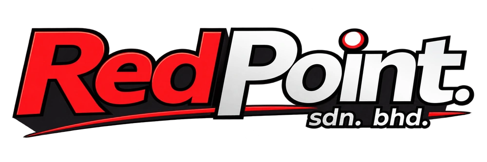
From the newsroom to the creative lens, from local perspectives to diverse audiences, Red Point combines the professional judgment of traditional media with the agility of new media. Through platform-native creative content, we help Malaysian brands build clear, distinctive identities and carry every story worth seeing to the people who matter, creating greater impact. The judgment of traditional media. The expressive power of new media. Greater possibilities for every good story.
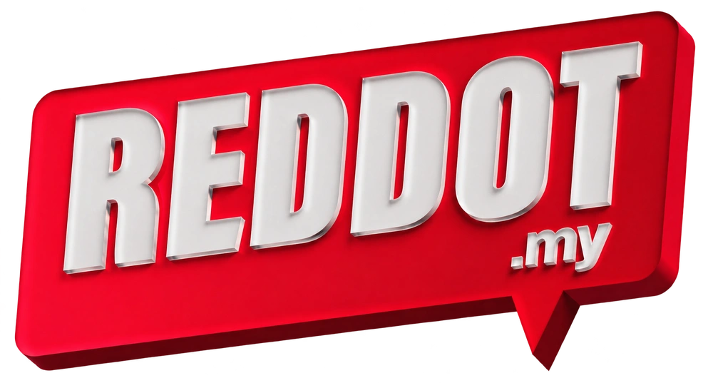
01 / CHINESE MEDIA ↗ 02 / CREATIVE ↗ 03 / ENGLISH MEDIA ↗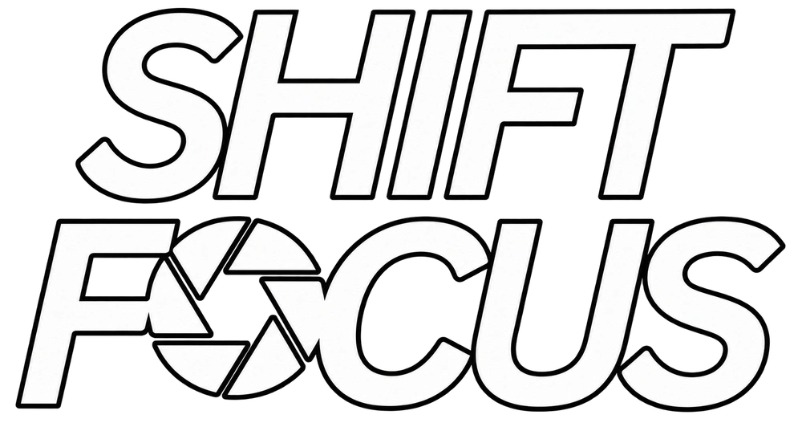
04 / AUTO & TECH ↗Media should keep its judgment and responsibility, while continually evolving how it communicates.
Red Point Sdn Bhd was founded in Kuching, Sarawak in 2023. We began with a clear purpose: to combine the strengths of traditional media with the speed, visual language and platform thinking of new media, helping Malaysian businesses build clearer and more distinctive brands.
From editorial publishing and digital media to commercial photography, video and social content, our work is not only about visibility. It is about being understood, remembered and meaningfully connected with the right audience.
Our four brands serve different languages, interests and content contexts, but share one belief: every story worth knowing deserves a better way to be told.
Red Point Sdn Bhd was established with digital media and content creation at its core. RedDot launched in the same year, bringing clear, timely Chinese-language information to local readers.
The team grew from three to fifteen, expanding from a single media platform into English news, lifestyle storytelling, commercial visuals, social video, automotive and technology content.
While continuing to deepen our work in Sarawak, Red Point is building business, client and partnership opportunities beyond Kuching.
Our ambition is to grow a nationwide network of business and creative partnerships, helping more brands move from local relevance to national recognition.
From a 50-year-old Kuching food tradition to the dream car of a generation, four brands turn different interests into stories people choose to watch, read and share.
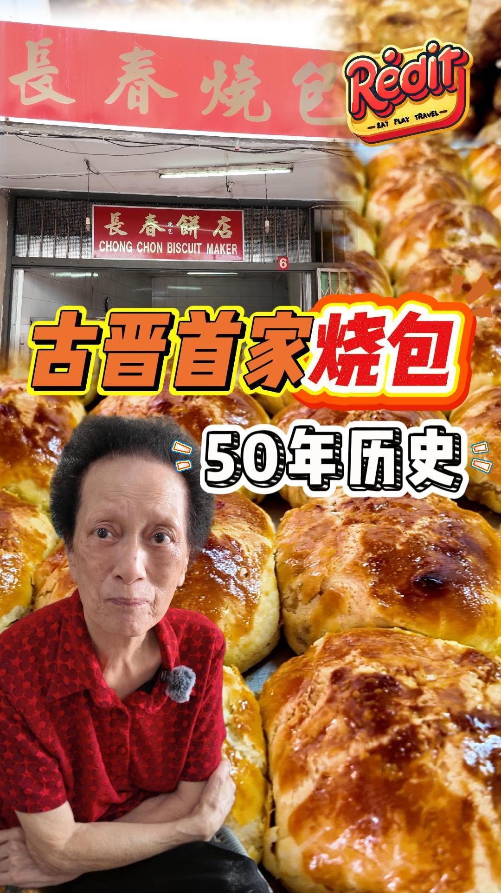
Watch on Instagram ↗Published by RED it. Displayed views checked 19 October 2026.
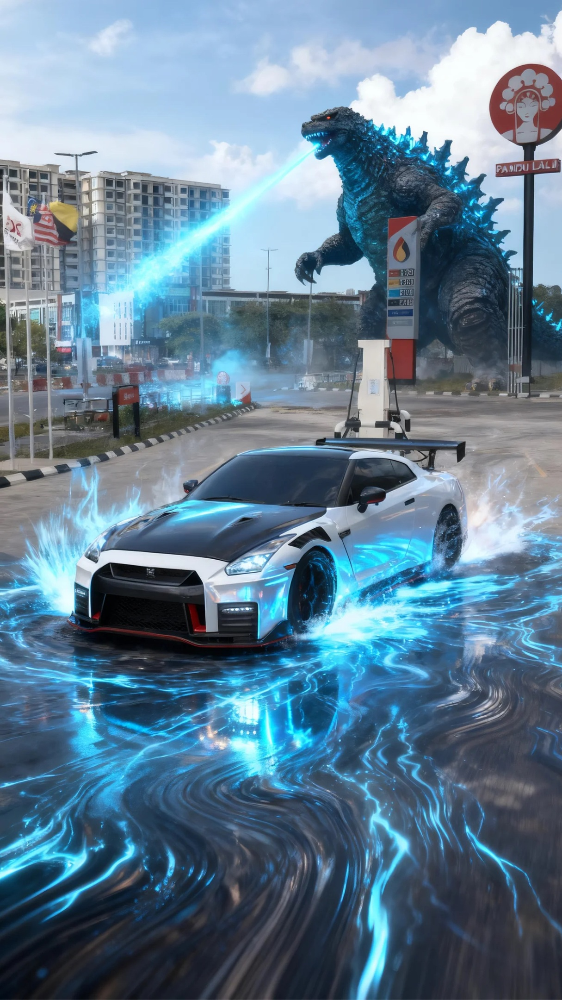
Watch on Instagram ↗ShiftFocus x kokxiangg
Editorial content published by RedDot.
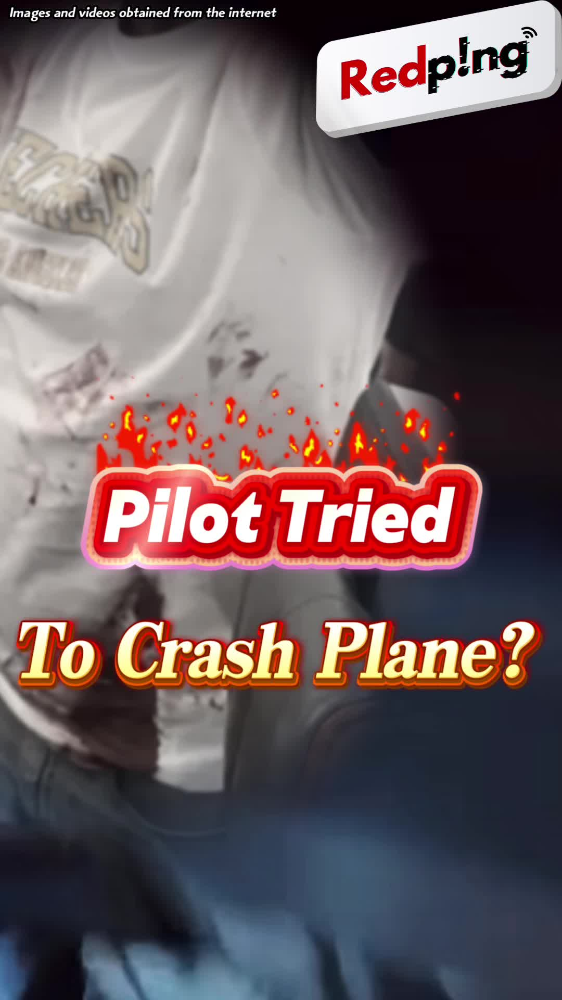
Watch on Instagram ↗English-language editorial content by RedPing!
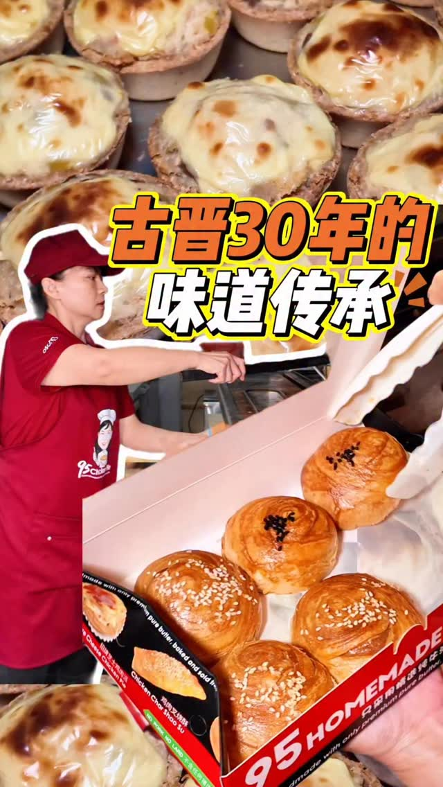
Watch on Instagram ↗RED it x kuqing95bakery
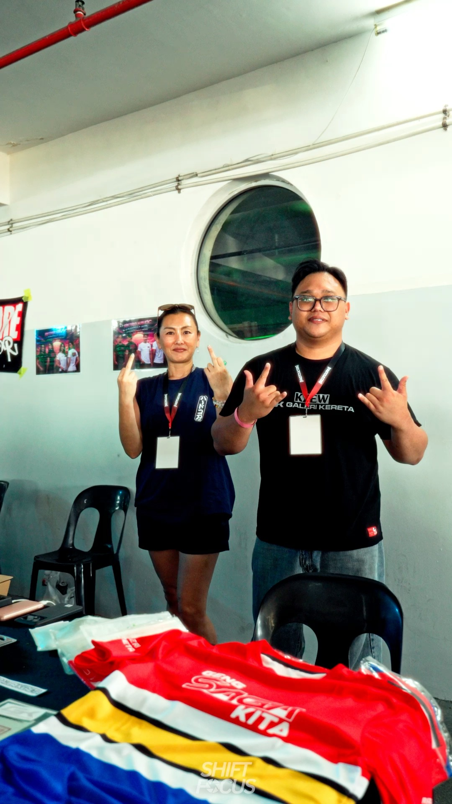
Watch on Instagram ↗Collaborative post; full credits on Instagram.
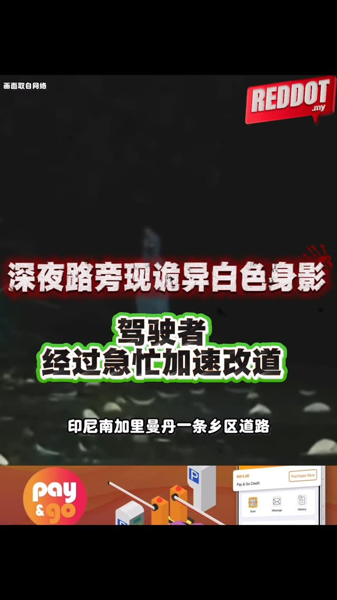
Watch on Instagram ↗Published with qualifying context; a claim is not presented as fact.
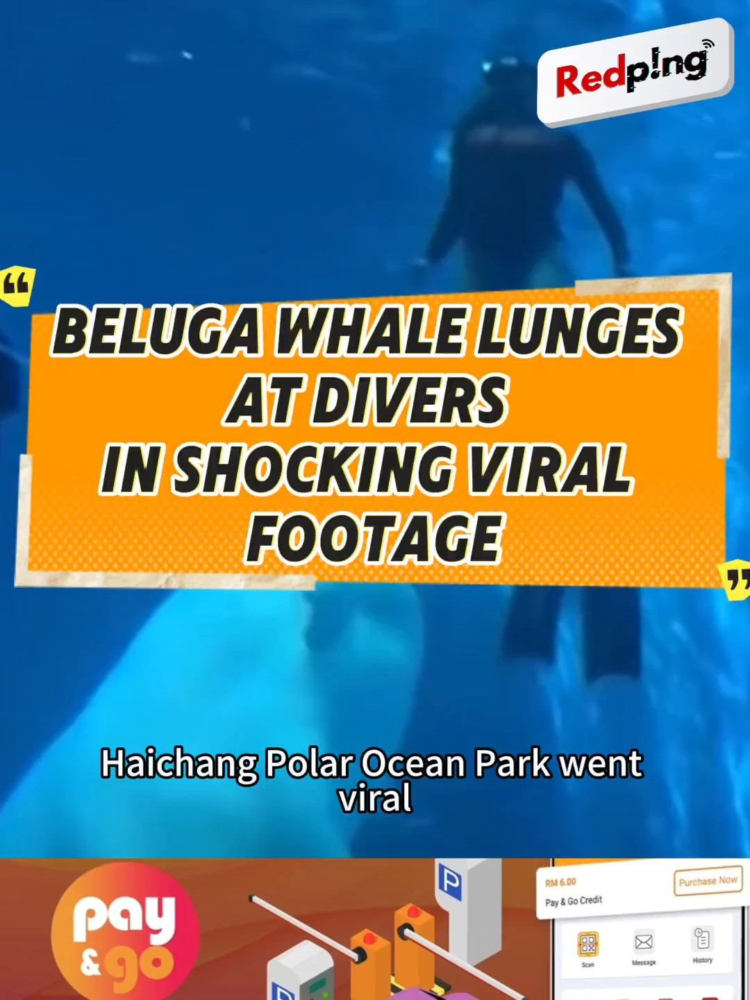
Watch on Instagram ↗English-language editorial content by RedPing!
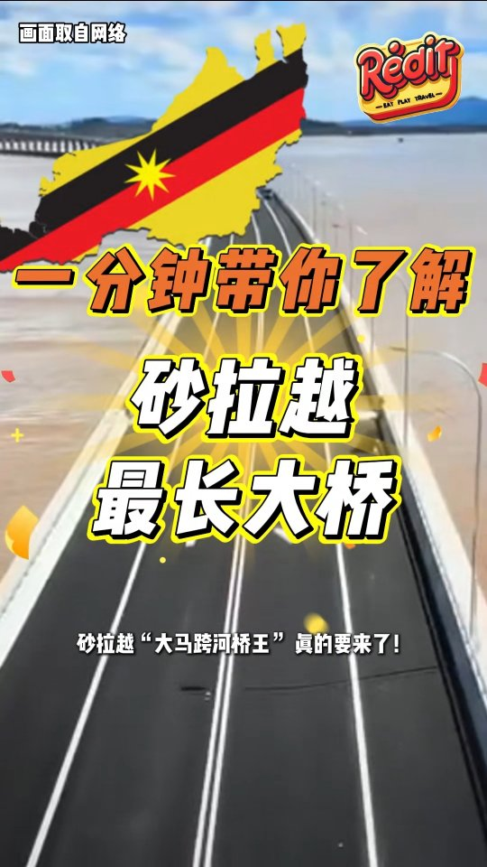
Watch on Instagram ↗Published by RED it in its original date context.
Unique Garage original / ShiftFocus collaboration
Published by RedDot in its original reporting context.
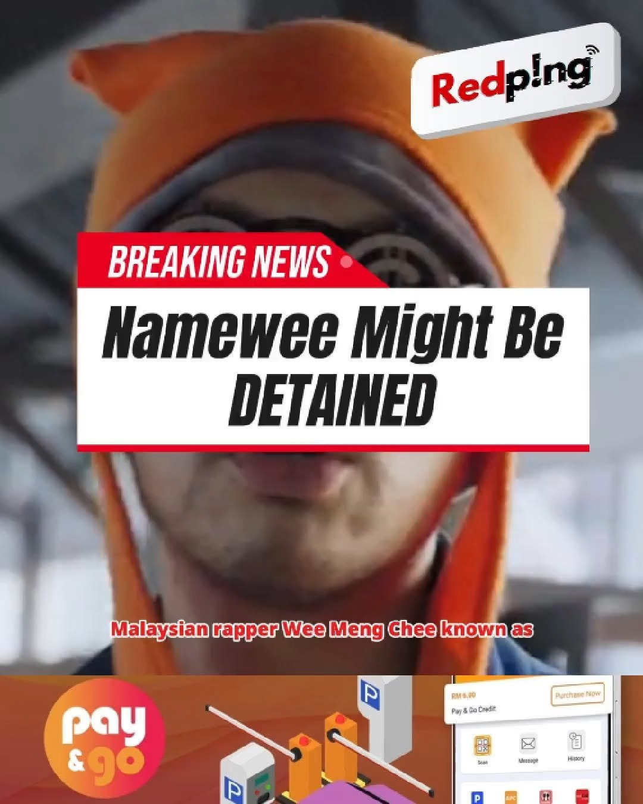
Watch on Instagram ↗Published by RedPing! without presenting the dated report as a current conclusion.
Serving different languages, interests and content contexts, with one purpose: bringing good stories to the right people.
RedDot serves Chinese-language readers in Malaysia by turning fragmented, complex and fast-moving developments into clear, direct and accessible information.
From current affairs, public issues and business to entertainment and everyday life, its editorial lens is grounded in local context, accuracy and public relevance.
Explore · reddot.myRED it begins with food and everyday life, turning local flavours, people and places into warm visual stories while producing commercial photography, video and social content for brands.
Its work spans food and beverage, retail, hospitality, commercial spaces, events and creator collaborations, giving brands both stronger visuals and a clearer voice.
Explore · redit.myRedPing! connects English-language readers with developments in Malaysia and beyond, covering current affairs, society, culture, entertainment, lifestyle and technology.
Through online articles and social-first video, it brings relevant information to a wider English-speaking audience in a format designed for digital reading.
Explore · redping.myShiftFocus covers cars, mobility, smart devices and digital products for audiences interested in performance, design and innovation through news, explainers and reviews.
From new vehicles and tuning culture to the technologies changing mobility and everyday life, it connects specialist subjects with the audiences who care about them.
Explore · shiftfocus.myWe operate media platforms across languages and specialist interests, applying clear editorial judgment to news, information and feature content.
Discuss a collaboration ↗From creative direction to commercial photography, brand video and short-form production, we give brands a distinctive and consistent visual voice.
Discuss production ↗We do not simply repost the same material. Words, images and video are reshaped around each platform, audience and viewing behaviour.
Talk brand content ↗We bring together Chinese, English, lifestyle and automotive-tech perspectives to shape suitable collaborations for businesses, agencies and content partners.
Explore the fit ↗From brand communication to visual production, find the platform and content format that fit your audience, market and objectives.
Brand content, commercial visuals, social media and integrated communication.
Talk brand growth ↗ FOR STORIESEditorial content, features, cross-brand stories and media collaboration.
Discuss content ↗ FOR PARTNERSClient briefs, production scope, media opportunities and long-term partnerships.
Explore partnership ↗Brand positioning, content interests, service formats, selected work and enquiry guidance in one place.
To make brands understood, not merely noticed.
We believe effective content does more than distribute information. It builds trust, recognition and lasting connection. Red Point will continue bringing together editorial judgment, technology and visual creativity so local brands can speak confidently to larger markets.
From Kuching, our vision is to become a new-generation media and creative collective connecting brands, content and audiences across Malaysia.
We want to meet people with editorial judgment, creative standards and the willingness to keep learning.
If you enjoy asking questions, telling stories, filming, editing, designing or helping brands connect with audiences, introduce yourself and your work.
Talent introductions are welcome. These are areas of interest, not advertised vacancies. We will reach out when a relevant opportunity becomes available.
Introduce yourself ↗RedDot focuses on Chinese-language information; RedPing! serves English readers; RED it combines food and lifestyle storytelling with commercial visual production; ShiftFocus covers automotive and technology. We recommend the right fit based on your audience, objective and format.
Yes. Share the audience you want to reach, your objectives and preferred formats, and we can discuss a suitable mix of brands, responsibilities and distribution.
We do not make blanket reach guarantees. Results depend on the content, platform, audience, timing and distribution. Deliverables, objectives and measurement are agreed in the project brief.
A short company or brand introduction, target audience, objective, timing and budget range are helpful. If these are not final, an early idea is enough to begin.
Brand promotion, creative production, media partnerships, agency enquiries or talent introductions can all begin with a simple hello. Tell us who you want to reach, what you want to solve and what you are imagining next.
Company Registration No.
202301040351 (1534270-P)
Established in 2023